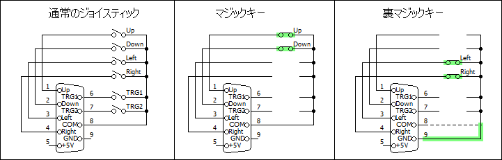
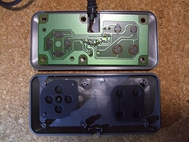
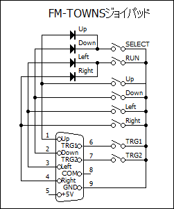
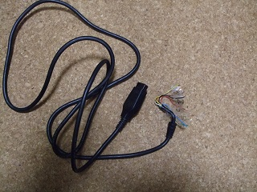
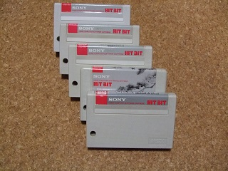
| 発売 | タイトル | マジックキー | 裏マジックキー |
| 1986年11月 | GALL FORCE | 対応 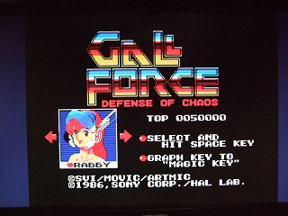 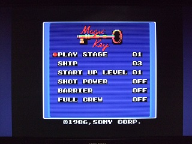 |
対応 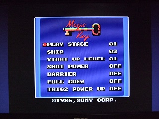 |
| タイトルに「GRAPH KEY TO "MAGIC KEY"」と表示。裏マジックキーメニューでは「TRIG2 POWER UP」が追加されます。 | |||
| 1986年11月 | 雀聖 | 対応 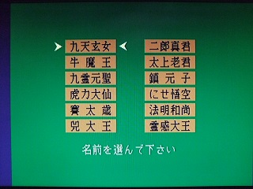 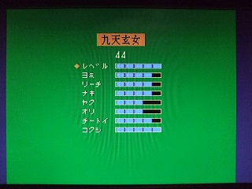 |
非対応 |
| これは分かりにくく、「実践」を選んだ状態でESCキーとSELECTキーを押すと対戦相手のパラメータを変更できるメニューに入ります。裏マジックキーでは何もおきません。 | |||
| 1987年 6月 | Replicart | 対応 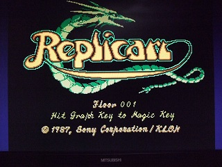 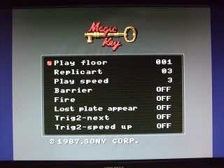 |
対応 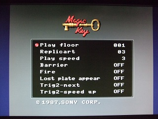 |
| タイトルに「Hit Graph Key to Magic Key」と表示。裏マジックキーメニューでもメニューが出ますが、マジックキーのメニューと同じようです。 | |||
| 1987年 8月頃 | 聖飢魔Ⅱスペシャル | 非対応 | 非対応 |
| 1987年 9月 | 奇々怪界 | 対応 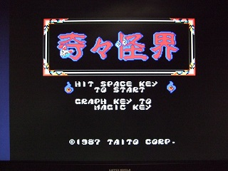 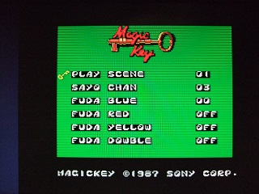 |
非対応 |
| タイトルに「GRAPH KEY TO MAGIC KEY」と表示。裏マジックキーメニューでは何もおきません。 | |||
| 1987年 9月 | Hard Ball | 非対応 | 非対応 |
| 1987年11月 | 棋聖 | 非対応 | 非対応 |
| 1987年12月 | 軍人将棋 | 対応 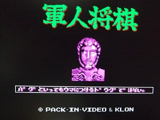 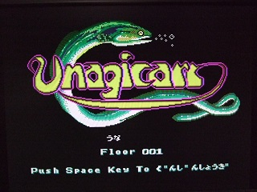 |
対応 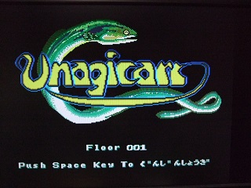 |
| これはHitBitブランドのソフトではありません。↑で紹介した「Replicart」を作ったKLONという会社が作ったソフトで、「Replicart」のタイトル画面のパロディ「Unagiacrt」が表示されるだけです。Spaceキーを押すと通常の「軍人将棋」のタイトル画面になります。 画面が変化しているので写真は異なっていますが、マジックキーでも裏マジックキーでも同じです。本来は100勝すると表示されるご褒美画面のようです。 MSX FAN MSX FAN 1994年6-7月号にも収録されています。同じKLONという会社が作った他のソフトも調べてみましたが、対応しているものは見つかりませんでした。 |
|||
| 1988年 6月 | ファミリーボクシング | 対応 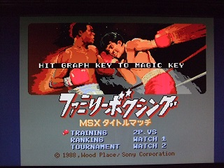 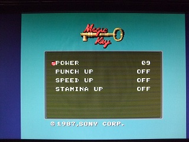 |
対応 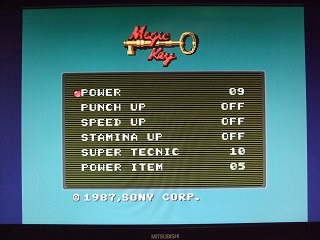 |
| タイトルに「HIT GRAPH KEY TO MAGIC KEY」と表示。裏マジックキーメニューでは「SUPER TECNIC」「POWER ITEM」が追加されます。 | |||